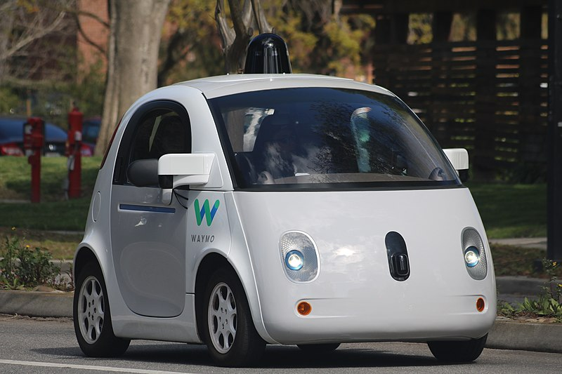
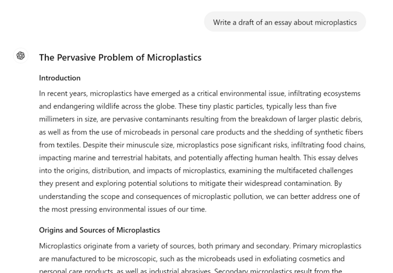
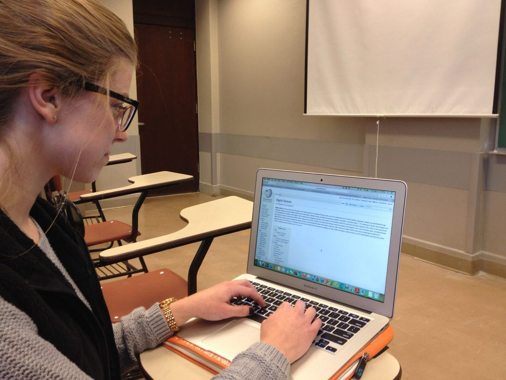
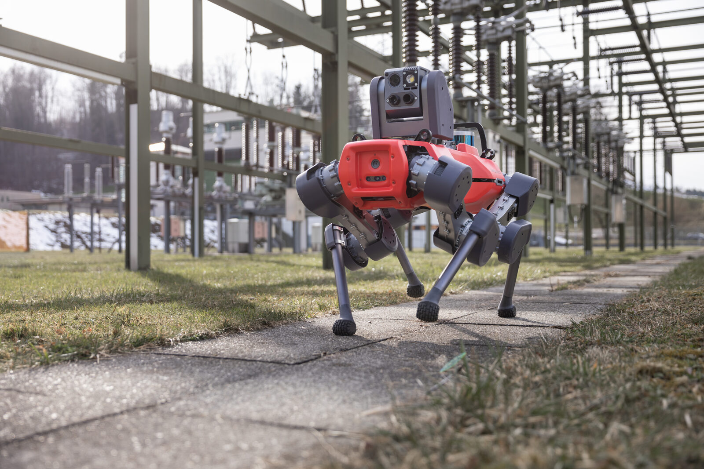

How machines learned to think in patterns — and why that changes school, work, and everyday life.
Chatbots write essays. Doctors use the same kind of tools to help diagnose disease. As of August 2026, that speed is why understanding how AI works matters in school — not because the next headline will stay still.
Ask a computer to tell a cat from a dog. It sounds easy. It is not, and the reason is stranger than you might guess: nobody can write down the rule. Try it. Every rule you come up with — pointed ears, whiskers, size — has a dog that fits it and a cat that breaks it. You know a cat when you see one, but you cannot say how. So for a long time computers could not do it either.
What changed is that we stopped trying to write the rule. Instead we show the machine thousands of pictures already labelled cat or dog, and let it work out for itself which patterns go with which label. That is what people mean by machine learningBuilding a computer program by showing it many labelled examples and letting it find the patterns itself, instead of writing the rules by hand.. The machine is not told what a cat is. It is shown, over and over, until it can carry on the pattern by itself.
That one idea explains most of what follows, including the odd parts. It explains why these systems are good at jobs nobody could write rules for, like translating a sentence or describing a photo. It also explains why they fail in ways no person would. A machine that has only ever seen one kind of example has no idea the other kinds are out there.
You have almost certainly used one today without calling it that. The app that finishes your sentence before you do, the one that picks which video plays next, the one that recognises a face in a photo — all of them were built the same way, by being shown examples rather than being given rules. When people say a chatbot is "trained", this is what they mean. Nobody sat down and taught it grammar.
Twelve fruits, sorted by size and sweetness. Switch an example off and the machine forgets it. The shaded background is its guess for every possible fruit.
Using all 12 examples, the machine sorts new fruit correctly.
Try switching examples off above and the failure is not subtle. Take away every lemon and the machine does not become uncertain about lemons — it confidently calls them something else, because "lemon" is no longer a thing that exists as far as it knows. It has no rules of its own to fall back on. It only has what it was shown.
That is worth keeping in mind every time you read that an AI system was biased or got something badly wrong. Usually nobody programmed it to be wrong. It learned from a pile of examples, and the examples were missing something, or contained a pattern nobody meant to teach it. The machine cannot tell the difference between a pattern that is true about the world and a pattern that is only true about the pile.
Where things stand, August 2026. The systems built this way have moved quickly, and the people who built them do not all agree about what happens next. Geoffrey Hinton, who won a Nobel Prize for the work underneath modern AI, left Google in 2023 so he could speak freely about risks he had come to worry about. Others who worked on the same ideas think those worries are overstated. Both groups know the technology extremely well. That disagreement is not a sign that somebody is being dishonest — it is what a genuinely open question looks like while it is still open.
AI is changing fast. The ideas below are the parts that stay useful even when the headlines move. Check a trusted news source for anything newer than August 2026.
You've probably heard people talk about "AI." But what does it actually mean? Artificial intelligence is when a computer is built to do things that normally require human thinking. It can recognize faces. It can understand speech. It can make decisions.IBM
Here's the key part: most AI today doesn't "think" the way you do. It learns by looking at huge amounts of data. Then it finds patterns in that data. That's very different from a regular computer program. In a regular program, a programmer writes every rule by hand.Economist
The idea behind modern AI actually comes from the human brain. Your brain has about 86 billion tiny cells called neurons. These neurons send signals to each other. That's how you think, learn, and remember things.Journal of Comparative Neurology
Geoffrey HintonA British-Canadian computer scientist who spent decades studying neural networks and later won the 2024 Nobel Prize in Physics for that work. is one of the scientists who helped build modern AI. He explains it like this. Think of yourself as a brain cell. Other brain cells are sending you signals, like votes. Some are voting "go ping!" and some are voting "don't go ping!" If you get enough votes to go ping, you fire. The whole system learns by changing how strong those votes are.Hinton, 2025
"You have a whole bunch of brain cells, and brain cells sometimes go ping... Brain cells are listening to other brain cells going ping. And when one brain cell goes ping, it's kind of voting for whether another brain cell should go ping."
Geoffrey Hinton, Babbage, The Economist, 2025In the 1980s, scientists figured out how to build a version of this inside a computer. They created artificial neural networks. This is software that copies the way brain cells connect and communicate. Instead of real neurons, you have virtual ones. Instead of changing real connections in your brain, the computer changes numbers called weightsNumbers inside a neural network that control how strong each connection is — like the strength of each 'vote.'.
When computers are built to do things that normally require human thinking, like understanding language, recognizing images, or making decisions.
A computer system inspired by the human brain. It has layers of connected "neurons" that learn to recognize patterns by adjusting the strength of their connections.
A set of step-by-step instructions that a computer follows to solve a problem or complete a task.
Answer a quiz below to unlock a bonus fact about where the term "AI" came from.
When you learn something new, your brain strengthens certain connections between neurons. A machine learns in a surprisingly similar way. It adjusts the weightsNumbers inside a neural network that control how strong each connection is — like the strength of each 'vote.' between artificial neurons. It keeps adjusting until it gets better at its task.Economist
Imagine you want to teach a computer to tell a cat from a dog in photos. You don't write rules like "cats have pointy ears." Instead, you show it thousands of photos of cats and dogs, each labeled. Every time it guesses wrong, it adjusts its internal connections. That makes it less likely to repeat the mistake. After enough examples, it learns the patterns on its own.
This process is called training. The method that makes it work is called backpropagationThe main method AI uses to learn — sending a signal backwards through the network to adjust its connections after a mistake.. Geoffrey Hinton, one of its inventors, describes it simply. You send signals backwards through the network. That tells each connection how to change. The goal is for the network to get better at predicting the right answer.Hinton, 2025
The main method AI uses to learn. When the AI makes a mistake, it sends a signal backwards through the network to adjust the connections — making it a little more accurate each time.
Here's where it gets wild. When a neural network learns words, it turns each word into a big list of numbers. This list is called a vectorA list of numbers that represents something — like a word — so a computer can do math with it and compare it to other things.. Words with similar meanings end up with similar numbers. You can actually do math with them.
If you take the number pattern for "Paris," subtract the pattern for "France," and add the pattern for "Italy" — you get a pattern that's closest to "Rome." The AI learned the relationship between countries and capitals entirely on its own, just from reading text.
Hinton demonstrated another example of this pattern-matching. He asked people a question. Which seems more likely: that all dogs are male and all cats are female, or the other way around? Almost everyone says dogs are male and cats are female. That's complete nonsense, of course. Why does everyone say it, then? In our language and culture, the patterns linked to "dog" are more similar to the patterns linked to "male." Neural networks pick up on exactly the same patterns.
Hinton likes to test this with a fun sentence: "She screamed him with the frying pan." You've never seen "screamed" used as a verb meaning "to hit" — but you instantly know what it means from context. That's exactly how modern AI understands language. It doesn't memorize definitions. It figures out meaning from how words are used together.Hinton, 2025
If AI learns language the same way you do — by picking up patterns from context — does that mean it "understands" language? Or is it just really good at faking it?
The examples (images, text, audio, etc.) that an AI system learns from. The more diverse and high-quality the data, the better the AI tends to perform.
The ability to find meaningful patterns in data. This is the core skill that makes AI useful — from recognizing faces to translating languages.

For decades, most computer scientists thought neural networks were a dead end. Geoffrey Hinton remembers: "People in computer science thought neural nets were nonsense. I'm very confident about that."Hinton, 2025 So what changed?
Three things came together at once. Together, they transformed AI. It went from a niche research topic to the most talked-about technology in the world.
In 2009, Stanford professor Fei-Fei Li and her team released ImageNet. It was a database of more than 14 million images, each labeled by hand. For the first time, neural networks had enough examples to learn from. Before ImageNet, AI researchers had tried to teach computers to see with just a few thousand images. It was like trying to learn a language from a single page of a book.
Training a neural network takes billions of math calculations. Regular computer processors weren't fast enough. But a different kind of chip, the GPUA computer chip originally built for video games that turned out to be great at running neural networks too., turned out to be perfect for neural networks. It was originally designed for video games. One of Hinton's students, Alex Krizhevsky, "managed to make Nvidia GPUs talk to each other" and built a system dramatically faster than anything before.Hinton, 2025
In 2012, Hinton's two students entered the annual ImageNet competition. Their names were Alex Krizhevsky and Ilya Sutskever. Sutskever later helped start the company OpenAI. Their system, called AlexNet, used deep neural networks trained on GPUs. It cut the error rate roughly in half compared to every other system.
AlexNet "finally convinced all the people doing computer vision that what they were doing was wrong and they should do neural nets."
Geoffrey HintonAfter AlexNet's success, Hinton and his two students set up a company. Every major tech company wanted to buy it. They had "absolutely no idea" what they were worth. So a friend suggested they run an auction.
"Our standard neural net conference was happening in a casino in Lake Tahoe... on the ground floor they had this casino with people pulling one-armed bandits and smoking. And upstairs in our hotel room, we were running this auction where you had to raise by $1 million... we were raking in $1 million every half hour, which is quite fun in a casino." Google won the auction for $44 million. Years later, a senior VP told Hinton "they were amazed that they got it so cheaply."
Hinton compared the resistance to neural networks to another famous example in science: Continental Drift. In the early 1900s, a scientist noticed something. South America and Africa fit together like puzzle pieces. He had strong evidence: matching rock formations, and similar fossils on both sides of the Atlantic. But geologists dismissed him. They believed the Earth was rigid. "It was like that," Hinton says. The evidence was right there. The established experts just couldn't see it.
A computer chip originally designed for video games that turned out to be perfect for training AI. GPUs can do billions of math calculations at the same time, which is exactly what neural networks need.
A large collection of information (images, text, sounds, etc.) used to train an AI system. The quality and size of the dataset directly affects how well the AI learns.
The field of AI focused on teaching computers to "see" — to understand and interpret images and videos.

For decades, AI was something only scientists and engineers thought about. Then everything changed. On November 30, 2022, a company called OpenAI released a chatbot called ChatGPT. The name is short for "Chat Generative Pre-trained Transformer" — and within two months, 100 million people were using it. That made it the fastest-growing consumer application in history.Reuters
Since January 2025, the pace of AI progress hasn't slowed down. By mid-2026, OpenAI, Anthropic, Google, and other companies had each released several new, more capable model generations. These newer versions could reason through harder problems. They could hold much longer conversations. They made fewer factual mistakes than the AI most people first tried back in 2022 and 2023.TechCrunch
The bigger change during this period wasn't just "smarter chatbots," though. It was AI learning to act on its own. By 2026, AI systems could handle multi-step jobs without a person doing each step. They could browse websites, fill out forms, and even write and run their own computer code. Some travel companies, for example, rolled out AI agents that could compare flight options. These agents could also handle guest messages for hotel partners automatically. That cut out a lot of the back-and-forth a human used to have to do.Booking.com This shift is called agentic AI — AI you chat with becoming AI that acts for you.
ChatGPT is an example of a Large Language ModelAn AI trained on huge amounts of text from the internet. ChatGPT, Gemini, and Claude are all examples., or LLM. It doesn't "know" facts the way you do. Instead, it predicts what word should come next. It bases that prediction on patterns it learned during training. Hinton built a tiny version of this back in the 1980s. Today's LLMs have billions of parametersAdjustable settings inside an AI model that control how it responds — the modern, much larger version of the 'weights' idea. and are trained on trillions of words.
Today's AI doesn't just analyze data. It creates new things. It can write essays, generate realistic images, compose music, and even write code. This is called generative AI. ChatGPT makes text. DALL-E and Midjourney make images. Suno makes music.
This has raised huge questions. If AI can write a school essay, what does that mean for learning? If it can create a photo of a person who doesn't exist, how do we know what's real? These are some of the biggest questions of our time.
One of the biggest problems with AI chatbots is that they sometimes make things up. They state "facts" that are completely wrong but sound convincing. Most people call this hallucination. But Hinton says that's actually evidence AI works more like the human brain than we thought.
"Most people have a completely wrong model of what memory is. They think of memory as like a file on a computer... When you want to recall something, what you do is you generate it. You make it up."
Geoffrey Hinton, Babbage, 2025Hinton says AI chatbots are "a bit worse than us at present" at noticing their mistakes. But the newest models, like DeepSeek and OpenAI's reasoning models, can do more. They can now produce "strings of words that are their thinking" and then reflect on them to catch errors. "They're getting to the stage when they're going to be as good as people at noticing when they're making it up."
The type of AI behind ChatGPT. "Generative" means it creates new text. "Pre-trained" means it learned from huge amounts of text before you ever talk to it. "Transformer" is the architecture (design) that lets it pay attention to the most important words in a sentence.
An AI system trained on enormous amounts of text to predict and generate language. ChatGPT, Gemini, and Claude are all LLMs.
AI that creates new content — text, images, music, video, or code — rather than just analyzing existing data.
When an AI confidently states something that is incorrect. Hinton points out that humans do this too — we call it confabulation.
If human memory is also a kind of "making things up" based on patterns — how confident should we be in our own memories? And how should that change the way we judge AI?
Keep answering quizzes to unlock a bonus fact about a shock to the AI industry.

This might be the section that matters most to you. AI is already changing how schools work. Your generation is the first to deal with it.
In April 2025, the Center for Humane Technology podcast Your Undivided Attention brought together two experts to talk about exactly this. Maryanne Wolf is a brain scientist who studies how we learn to read. Rebecca Winthrop is an education expert at a research center called Brookings.
Past tech in classrooms often failed. Every generation gets excited about a new technology transforming education: radio, TV, desktop computers, iPads. But research from the OECDA group of 38 countries that study and compare education policy across nations. found that just putting computers in classrooms didn't actually help students learn better.
Screens affect how your brain develops. A study in JAMA, one of the world's top medical journals, found that too much screen time can slow down how quickly young kids learn to talk. A separate study in Singapore found that students who spent too much time on screens had a harder time paying attention.
But this moment is also an opportunity. Both experts argued against fighting AI or pretending it doesn't exist. Instead, they said schools should redesign around the skills AI can't replicate: curiosity, creativity, critical thinking, collaboration, and genuine human connection.
Human connection matters more than task completion. Wolf said the deepest learning happens through relationships — a teacher who sees what you're misunderstanding and gives you exactly the right nudge. AI tutors may eventually get good at this. As of the April 2025 conversation Wolf and Winthrop recorded, the human element is still irreplaceable.
Your generation is the first to go through school with AI tools that can write essays, summarize readings, and solve problems for you. Does using AI to do your homework help you learn — or does it skip the part where learning actually happens?
Cheating is already happening, mostly under the radar. In a 2024 nationally representative Common Sense Media survey of U.S. teens, 40% said they'd used generative AI to help with a school assignment — and 46% of those students did it without asking their teacher first. Only about half of the students who used AI for schoolwork said they checked whether what it told them was actually true.
Fake AI content is fooling teens too, not just adults. In a separate, later Common Sense Media survey, about 35% of teens said they had personally been deceived by AI-generated photos, videos, or other content online, and 22% said they had shared something that turned out to be fake. Spotting an AI deepfake is only getting harder as the technology improves — which is part of why the EU's new labeling rule for AI-generated content (see the Godfather's Warning section below) exists in the first place.
School is one place AI is already changing how people learn. Work is the other. Adults argue about whether AI will create new jobs, erase old ones, or both. As of August 2026, most people in the United States expect fewer jobs — not more.
A Pew Research Center survey published August 18, 2026, found that 71% of U.S. adults think AI will lead to fewer jobs in the United States over the next two decades. That is up from 64% in 2024. Only 5% think AI will lead to more jobs. Among adults under 30 — people close to your age who will enter the workforce next — 73% now say fewer jobs, up from 61% two years earlier.Pew Research Center, Aug. 18, 2026
Workers talking about their own jobs are a little more mixed. In a February 2025 Pew survey, 32% of U.S. workers said workplace AI would lead to fewer opportunities for them in the long run. Only 6% said it would lead to more. About 31% said it would not make much difference.Pew Research Center, Feb. 2025
Experts do not all agree with the public. Some researchers warn that AI could automate a lot of work. Others argue it will also create new kinds of jobs, the way earlier machines did. The 2025 Stanford Emerging Technology Review is one place researchers argue over how to govern that change — not over a single official "jobs lost" number. There isn't one number everyone accepts yet.
When a new tool or machine means a job that used to need a person no longer does — or needs far fewer people. Displacement is not the same as "every job disappears." Some jobs change. Some go away. Some new ones appear.
If many adults think AI will mean fewer jobs, what skills are still worth practicing in school — the ones a chatbot can already do, or the ones it still can't?
For years, using AI meant typing a question and reading an answer. But researchers are now using AI for something stranger and more ambitious. They're trying to understand what animals are actually saying to each other.
AI is learning to decode animal communication. The Earth Species Project is a nonprofit founded by Aza Raskin and Britt Selvitelle. It uses machine learning to find patterns in animal sounds that humans can't detect. Their goal is to translate animal communication. That means more than identifying species by sound. It means understanding what animals are actually saying to each other.
Scientists expect to synthesize animal calls within years. In May 2023, Raskin predicted that within 12 to 36 months, AI would be able to generate fake animal calls, like whale songs or monkey calls, that sound just like the real thing. This could let researchers "speak back" to animals for the first time in history.
This could save lives — literally. One practical use: playing whale calls to redirect whales away from shipping lanes. That could prevent deadly ship strikes. Over 20,000 whales are estimated to be killed by ship strikes worldwide each year. AI-generated calls could warn them away from danger.
But there are serious risks. The same technology that could protect animals could be used to exploit them. Poachers could use fake bird calls to lure endangered species. Ecotourism operators could manipulate wildlife behavior for profit. And we might read human meanings into animal communication that aren't actually there. Researchers call this problem anthropomorphismGiving human traits or meanings to something non-human — in this case, assuming an animal sound means what it would mean coming from a person..
Animal "language" is more complex than we thought. Researchers found that a type of monkey called the gelada makes sounds with a rhythm surprisingly similar to how humans talk. Across many species, certain sounds seem to carry similar meanings. Scientists call this "sound symbolism." This suggests communication systems far more sophisticated than simple alarm calls.
If we could talk to animals, should we? What would it mean for conservation — and what could go wrong if the wrong people got access to this technology?
Geoffrey Hinton spent over 40 years working on neural networks, the technology behind modern AI. Almost nobody believed it would work. For decades, the mainstream AI community dismissed his research as a dead end. Then, in 2012, his student's system called AlexNet crushed the competition in an image recognition contest. Everything changed. As Hinton described it: "It felt validating. It feels like all those years of doing something that people thought was nonsense were okay."
Hinton went on to work at Google, where his research helped build the AI systems we use today. In 2024, he won the Nobel Prize in Physics for his foundational work on neural networks. But in 2023, he did something unexpected. He quit Google specifically so he could speak freely about the dangers of the technology he helped create.
"Hallucinations" mean AI is more like us than we thought. When AI makes things up, most people see it as a bug. Hinton sees it differently: "What that tells us is they're even more like us than we thought." He explained that human memory works the same way. We don't store exact recordings of experiences. "You don't store any strings of words in your head... you make it up." The technical term for this is "confabulation," and humans do it all the time.
The cucumber experiment. Hinton described a fascinating study about short-term memory. If someone says a word very faintly, so faintly you can barely hear it, something interesting happens. You're more likely to understand it correctly if someone said that same word five minutes earlier. Your brain stored a trace of the word even though you weren't trying to remember it. AI systems show similar behavior.
Only about 1% goes into safety. Hinton warned that AI companies spend almost all their resources on making AI more powerful. Almost nothing goes toward making it safe: "It's probably 1% goes into safety... governments need to force them to work on safety." He compared this to the early days of the drug-making industry, before governments required companies to test medicines for safety.
The best case and the worst case are both real possibilities. Hinton described two plausible futures. In the best case, AI dramatically improves healthcare, education, and scientific research. It helps us solve problems we couldn't solve before. In the worst case, AI could become smarter than humans and start working toward goals we didn't choose. Or powerful leaders could use it to spy on people and build weapons that operate on their own. His honest assessment: "I sort of believe both those things are quite plausible."
Hinton's call for governments to step in didn't go unanswered. Starting August 2, 2026, new transparency rules under the European Union's AI Act require AI systems to tell people when they're talking to a machine, not a human.
Not every AI expert agrees that heavier regulation is the right call, though — some warn it could carry real costs of its own.
Hinton argues companies won't fix safety problems on their own, because it cuts into what they're racing to build. His view: "governments need to force them to work on safety" — the same way governments eventually forced drug companies to test medicines before selling them.Hinton, 2025
In the 2025 Stanford Emerging Technology Review, Stanford researchers Fei-Fei Li, Christopher Manning, and Anka Reuel make a more practical case against sweeping, one-size-fits-all AI rules: they probably won't survive contact with politics. Their assessment: "mandatory governance regimes for AI, even those to stave off catastrophic risks, will face stiff opposition from AI researchers and companies," while voluntary, self-governance approaches are more likely to actually gain support. They also point out that broad regulation of foundational AI technology is hard to enforce even among allied countries, whereas rules aimed at specific uses — like AI in healthcare or finance — can plug into regulatory systems that already exist. Given how few companies currently have the resources to build cutting-edge models from scratch, they suggest lighter, more targeted rules stand a better chance of actually working than heavy-handed ones that simply get fought off.Stanford SETR, 2025
Notably, Fei-Fei Li built ImageNet — the dataset that made Hinton's own 2012 breakthrough possible (see Question 3 above). Even researchers closely tied to this technology's rise don't fully agree on how it should be governed.
Geoffrey Hinton helped create the technology behind modern AI — and then quit his job to warn people about it. When is it an inventor's responsibility to speak up about the risks of what they've built?

For years, using AI meant typing a question and reading an answer — you did the actual work yourself. That started to change by the mid-2020s, as companies began building AI that could carry out a whole task on its own, not just describe how to do it.
AI that can take multiple steps on its own to complete a task, like browsing a website, filling out a form, or writing and running code, instead of just answering one question at a time.
One real example: starting in April 2025, Amazon rolled out a feature called "Buy for Me." If Amazon doesn't sell something a shopper wants, the shopper can pick that item from another store's website without leaving the Amazon app. A person still reviews the order first, seeing the address, taxes, shipping cost, and payment method on an Amazon checkout screen. After that, the AI takes over: it visits the other store's website, fills in the shopper's name, address, and payment details, and completes the purchase there — a task that used to take a person several steps on a different website, now automatic once they've said yes.
If an AI can complete tasks for you without you watching each step, how do you know it did what you actually wanted? What could go wrong — and how much of the process would you want to check yourself before you'd trust it?
From a thought experiment to a technology that's changing everything — here's AI's story in key moments.
Alan Turing publishes "Computing Machinery and Intelligence," asking: "Can machines think?" He proposes the Turing Test. If a machine can fool a human into thinking it's human, it can be considered intelligent.
Frank Rosenblatt at Cornell builds the Perceptron, the first machine that could learn from examples. It was inspired by how neurons in the brain connect to each other.
Marvin Minsky and Seymour Papert publish Perceptrons, a book arguing that neural networks have fundamental limitations. Funding for neural network research dries up for over a decade.
Geoffrey Hinton, David Rumelhart, and Ronald Williams publish their paper on backpropagation. It's a way for neural networks to learn from mistakes by adjusting connections backward through the network. This becomes the foundation of all modern deep learning.
IBM's Deep Blue defeats world chess champion Garry Kasparov. It's a milestone. But Deep Blue used brute-force calculation, not the learning approach that would later define modern AI.
Hinton's team at the University of Toronto proves that neural networks can outperform traditional methods at recognizing speech. It's the first sign that the "dismissed" technology was about to take over.
IBM's Watson beats two all-time Jeopardy! champions. Unlike Deep Blue, Watson had to understand natural language: puns, wordplay, and tricky clues.
Hinton's student Alex Krizhevsky builds AlexNet, a deep neural network that crushes the annual ImageNet image recognition competition. Error rates drop by 10 percentage points overnight. This is the moment the AI revolution truly begins.
Google, Microsoft, and Baidu get into a bidding war for Hinton's tiny company. Google wins for $44 million. Hinton later recalled that the buyers "were amazed they got it so cheaply."
Ian Goodfellow invents Generative Adversarial NetworksTwo neural networks that compete against each other — one creating fake images, one trying to catch the fakes — until the fakes get very convincing., or GANs. This is the birth of AI-generated images.
DeepMind's AlphaGo defeats Lee Sedol, one of the greatest Go players ever. Go has more possible positions than atoms in the universe, so brute force was impossible. AlphaGo had to develop intuition.
A team at Google publishes the Transformer paper. This new design is based on an "attention" mechanism that lets AI focus on relevant words in a sentence. It becomes the foundation for ChatGPT, Gemini, and every major language model.
OpenAI releases GPT-3, a language model with 175 billion parameters that can write essays, code, poetry, and more. Researchers are stunned by its capabilities, and worried about misuse.
OpenAI launches ChatGPT in November. It reaches 100 million users in just two months, the fastest-growing consumer technology in history. AI goes from a research topic to a household word overnight.
GPT-4, Google's Gemini, Meta's LLaMA, and dozens of open-source models launch. AI can now pass the bar exam, write code, and generate photorealistic images. Hinton quits Google to warn about AI risks.
Geoffrey Hinton and John Hopfield win the Nobel Prize in Physics for neural network research. Demis Hassabis wins the Nobel Prize in Chemistry for AlphaFold, which predicted the shape of nearly every known protein.
China's DeepSeek and new "reasoning models" show AI systems that can think step-by-step. Governments worldwide debate AI regulation. As Hinton put it: "They can produce strings of words that are their thinking."
OpenAI, the company behind ChatGPT, releases AgentKit. It's a toolkit that lets companies build their own AI agents instead of having to invent the technology from scratch. It's a sign that "agentic AI" has moved from a research idea to a core, named feature major companies build on.
New parts of the European Union's AI Act take effect. It's one of the world's first major AI laws. Starting on this date, AI systems must tell people when they're talking to a machine instead of a human. AI-generated content like deepfakes must be clearly labeled.
1956 — the name is born: The term "artificial intelligence" was coined for a summer research workshop at Dartmouth College, organized by John McCarthy, Marvin Minsky, Nathaniel Rochester, and Claude Shannon. Their funding proposal claimed the project could make real progress "if a carefully selected group of scientists work on it together for a summer." It took closer to 70 years — and the field is still working on it.
Created the concept of a "universal machine". Proposed the Turing Test in 1950: the idea that a machine is intelligent if it can fool a human in conversation. His work laid the theoretical foundation for all of computing.
Pioneered backpropagation and deep learning over 40+ years when most researchers dismissed neural networks. Won the 2024 Nobel Prize in Physics. Quit Google in 2023 to warn about AI risks.
Created ImageNet, the massive dataset of 14 million labeled images that proved neural networks could "see." Without ImageNet, the 2012 AlexNet breakthrough might never have happened. Now a professor at Stanford, and an advocate for human-centered AI.
Helped develop foundational ideas behind modern language models and neural networks. Won the 2018 Turing Award, often called the "Nobel Prize of computing"A nickname for the Turing Award, computer science's top honor, comparing it to the prestige of a Nobel Prize., alongside Hinton and Yann LeCun. Now a leading voice for AI safety research.
Leads the company behind ChatGPT, the AI chatbot that brought artificial intelligence to the mainstream in 2022. Under his leadership, OpenAI grew from a small research lab into one of the most influential tech companies in the world.
Studies bias and fairness in AI systems. Co-authored landmark research showing facial recognition works worse on darker-skinned faces. Founded the DAIR Institute after a high-profile departure from Google. Now a leading voice for responsible AI.
Founded DeepMind, the lab behind AlphaGo and AlphaFold. AlphaFold predicted the 3D shape of nearly every known protein. Scientists had struggled with that problem for 50 years. Won the 2024 Nobel Prize in Chemistry.
These videos and podcasts will help you go deeper into how AI works and what it means. Start with the shorter ones and work your way up.
A fast-paced, student-friendly introduction to the field.
Beautiful visualizations of exactly how a neural network is structured and learns.
A short, clear explainer of the learning process behind AI.
A quick overview of AI that creates new content, not just analyzes it.
As you watch, ask yourself: What surprised me? What questions do I still have? How does this connect to what we've read?
These are the podcast episodes referenced throughout the page. Listen to go deeper on any topic.
These resources are ranked by difficulty. Start with the easier ones and work your way up as you learn more.
20 episodes covering everything from what AI is to ethics and the future. Fun, fast-paced, student-friendly.
Free classroom-ready lessons and videos about artificial intelligence from PBS. Designed for middle schoolers.
Interactive activities that let you train your own AI model. No coding experience needed — just curiosity.
Play with AI in your browser — draw with a neural network, make music, or teach a machine to recognize objects.
Balanced, accessible reporting on how AI is changing schools, work, and society.
Excellent global perspective on AI developments, from regulation in Europe to AI in developing countries.
Deep conversations about how technology affects us. The AI & School and AI & Animals episodes are great starting points.
Clear, visual explainers that break down complex AI topics. Good for understanding the big picture.
In-depth analysis of AI's impact on the global economy, politics, and science — one of the sources behind the science below.
Annual report tracking AI progress worldwide. Charts, data, and analysis from one of the top AI research universities.
Cutting-edge reporting on AI research and applications from MIT. For students ready for a real challenge.
Beautiful math visualizations that explain exactly how neural networks learn. Best for students who like math.